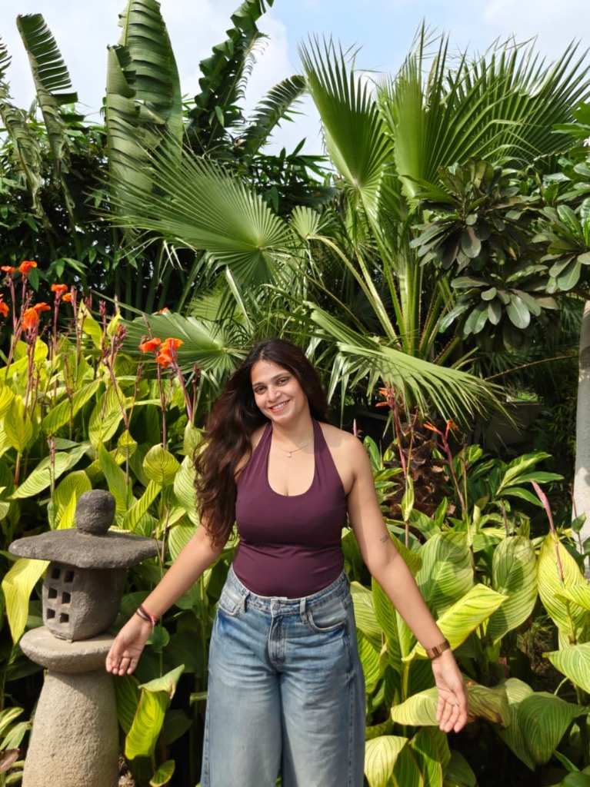
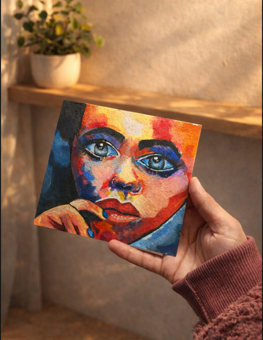
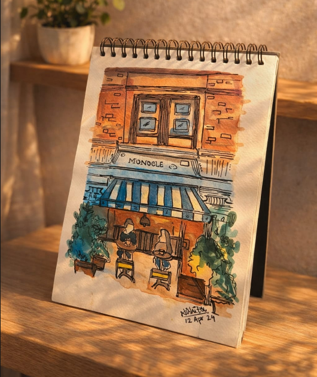
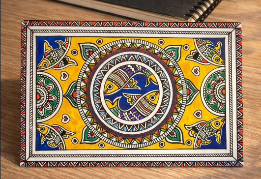

Aug 13, 2025
A Letter to the Self I Barely Recognize
There is a part of me that is lost. I know this because its absence is a void I feel more deeply with each passing day. Some days,...
Read on MediumHello, I'm
Translating real-world problems into actionable AI solutions while expressing creativity through art.
Scroll Down

Hello! I'm Nishita Jain, a pre-final year Integrated M.Tech CSE (Data Science) student at VIT Bhopal University with hands-on experience in machine learning, deep learning, and computer vision.
I've worked on translating ambiguous real-world problems into actionable AI solutions, including training and fine-tuning YOLO-based models in PyTorch for safety monitoring use cases. My experience spans the end-to-end ML lifecycle — data analysis, model experimentation, performance evaluation, and proof-of-concept development.
Beyond the world of code and algorithms, I find solace in painting and sketching. Art allows me to express the stories that data tells in a more visceral way. I believe that the best insights come from seeing patterns others miss — whether in datasets or on canvas.
Exploring insights through data analysis, visualization, and machine learning
Proactive Fraud Detection with Machine Learning focusing on identifying fraudulent financial transactions using supervised learning techniques. Includes data cleaning, feature engineering, handling class imbalance using SMOTE, and training classification models. Evaluated using precision, recall, F1-score, and ROC-AUC.
Satellite-based terrain and vegetation analysis using CartoDEM and NDVI datasets. Involves digital elevation modeling, hillshade generation, slope and aspect analysis, along with NDVI computation for vegetation health assessment. Implemented preprocessing, visualization, and geospatial analysis workflows using Python and GIS tools.
An IoT-Machine Learning based system designed to predict soil fertility with approximately 85% accuracy using real-time sensor data. Integrates data preprocessing, feature engineering, and multiple ML models to analyze soil health parameters and present insights through an interactive dashboard for agricultural decision-making.
A collection of my paintings and sketches — where creativity flows freely



Translated ambiguous warehouse safety requirements into actionable computer vision and deep learning problem statements. Designed datasets and evaluation strategies for object detection. Trained and fine-tuned YOLO-based models using PyTorch through systematic experimentation. Developed proof-of-concept computer vision solutions for real-time safety monitoring applications.
Worked on data science projects, applying machine learning models and data analysis techniques to solve real-world problems.
Organized data science events, workshops, and hackathons. Collaborated with team members to promote data literacy on campus.
Participated in various art events and exhibitions. Developed artistic skills and collaborated with fellow artists.
Specialization in Data Science. Pre-final year student with focus on machine learning, deep learning, computer vision, and AI applications.
Thoughts, reflections, and stories from my journey
There is a part of me that is lost. I know this because its absence is a void I feel more deeply with each passing day. Some days,...
Read on MediumA bitter drink in a porcelain cup ,
Read on MediumLet's connect and create something amazing together